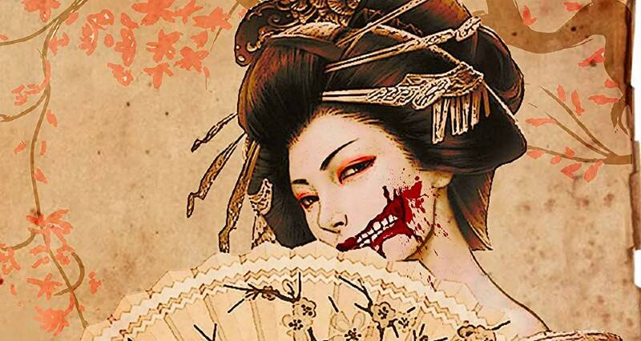
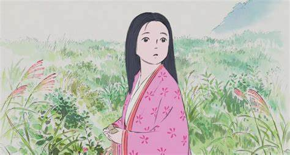
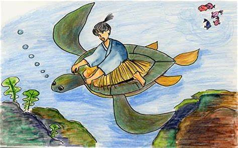
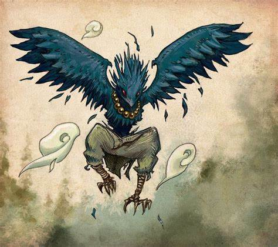
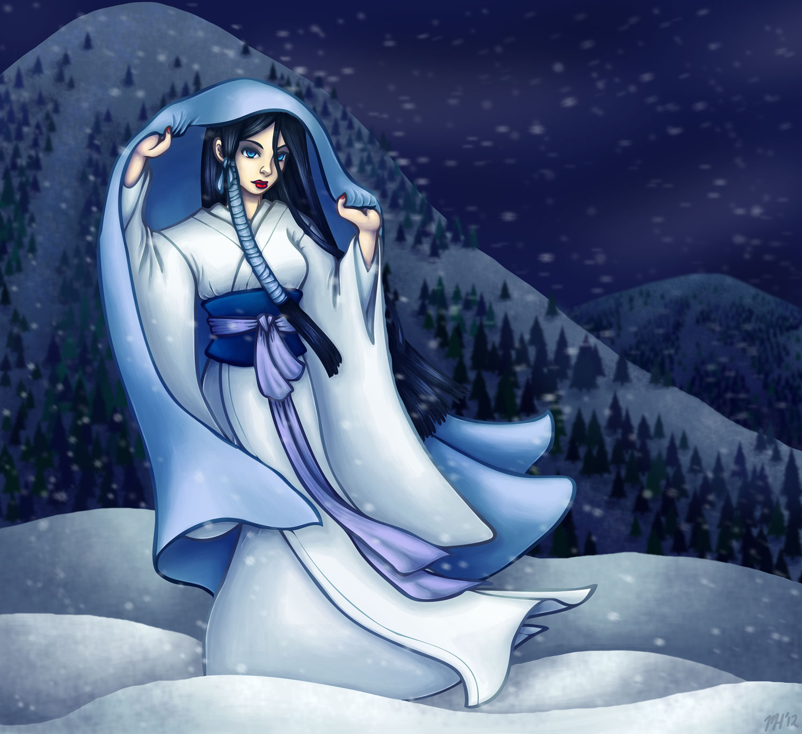
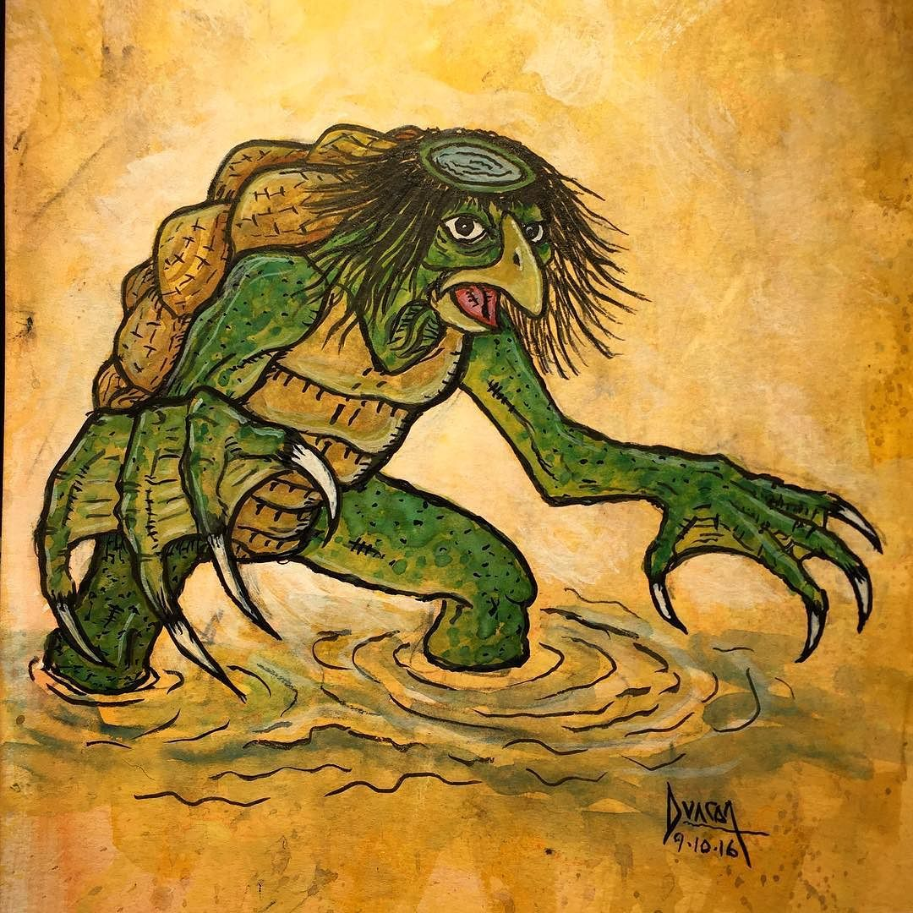
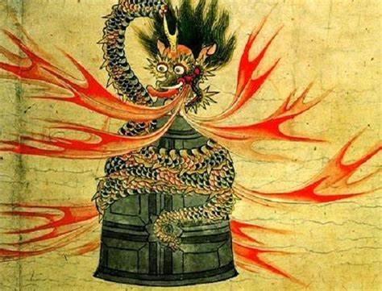

| LEYENDAS DE JAPÓN | |||
| Index Historia y Detalles del Pais Cultura de Japon Monumentos de Japon Sitios Turisticos | |||
| Cuchisake-Onna |
La princesa Kaguya | Urashima Taro | Tengu |
Una mujer con la boca cortada de oreja a oreja, que se cubre la cara con una mascarilla. Pregunta a las personas si la encuentran bonita, y si responden "no", las mata; si dicen "sí", se quita la mascarilla y les pregunta de nuevo, dejando solo una opción fatal. |
Una niña encontrada en un tallo de bambú que crece rápidamente, rechaza a sus pretendientes y finalmente regresa al reino lunar. |
Un pescador que salva una tortuga y es llevado al fondo del mar, donde pasa años, pero al regresar a la superficie, descubre que ha transcurrido mucho tiempo. |
Criaturas con cuerpo humanoide y rostro de ave, famosas por su habilidad en las artes marciales y por ser tanto protectores como traviesos. |
|  |  |  |  |
| Yuki-onna | Kappa | Aokigahara | La campana de Dojō-ji |
Un espíritu femenino que aparece en tormentas de nieve, capaz de congelar a sus víctimas con solo tocarlas. |
Criaturas acuáticas con apariencia de tortuga que viven en ríos y atacan a las personas, pero pueden ser derrotadas si se les hace inclinarse. |
El Bosque de Aokigahara es conocido por ser el lugar donde las almas de los suicidas rondan, confundiendo a los viajeros y llevándolos hacia la muerte. | Una joven monja se convierte en una serpiente vengativa después de ser rechazada, matando a su amado, quien se refugia en una campana, la cual queda marcada por su furia. |
|  |  |
 | |
| Todos los derechos reservados | |||